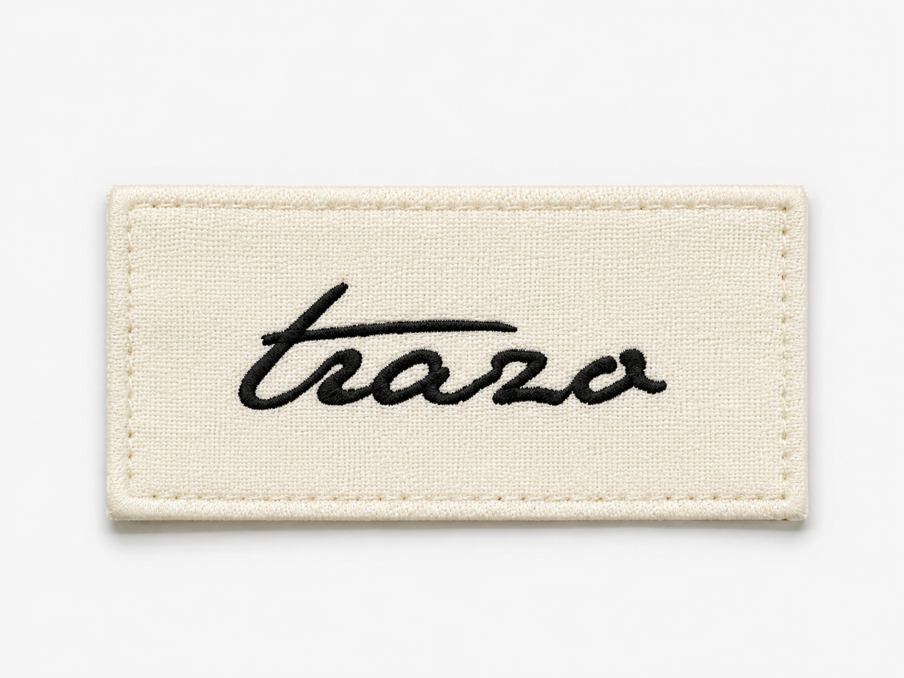

Selección
Menos acumulación y más criterio en cada compra.
Moda cápsula femenina
TRAZO propone prendas esenciales, combinables y atemporales para construir un armario más claro, más funcional y más tuyo.
menos prendas · más coherencia · calma visual · elegancia diaria · decisiones con sentido
menos prendas · más coherencia · calma visual · elegancia diaria · decisiones con sentido
Quiénes somos
TRAZO nace como respuesta a una sensación muy común: tener muchas opciones pero no saber qué elegir. En lugar de sumar más estímulos al armario, la marca propone reducir el exceso y dar más valor a cada elección.
Su propuesta se basa en el armario cápsula: piezas que no funcionan aisladas, sino como parte de un sistema. Cada prenda se piensa para convivir con el resto, facilitar combinaciones y construir una imagen personal más consistente.
Menos acumulación y más criterio en cada compra.
Prendas, colores y experiencia funcionan como un mismo sistema.
Una moda cuidada, cálida y accesible, sin códigos fríos ni presión comercial.
Valores
Reducción consciente, coherencia, atemporalidad, funcionalidad, calma, sensibilidad estética, cercanía e intención.
Comprar
Las carátulas son los looks completos. Al entrar en cada ficha puedes alternar entre el look y la foto individual del producto.

Experiencia online
La tienda online mantiene la misma lógica que la marca: lectura limpia, información clara, recorridos sencillos y una estética editorial sin sentirse distante. Cada ficha reúne look, producto, composición, talla y cesta en un mismo recorrido.
Ver cesta →Opiniones
"Me gusta que no parezca una tienda que te empuja a comprar más, sino mejor. Todo combina entre sí."
Lucía · 27"La web se siente limpia y muy editorial. Encontré rápido mi talla y entendí perfectamente cada prenda."
Marina · 34"Es ropa sencilla, pero con intención. Las piezas básicas tienen ese punto cuidado que hace que el look parezca pensado."
Claudia · 23Contacto
Para dudas sobre tallas, pedidos, devoluciones o colaboraciones, puedes contactar con el equipo de atención de TRAZO.